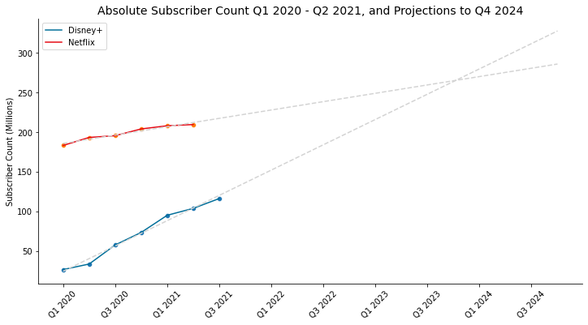
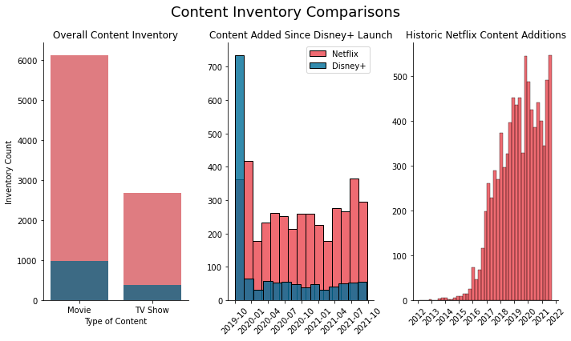
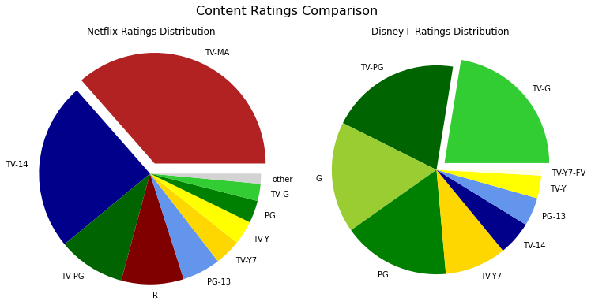
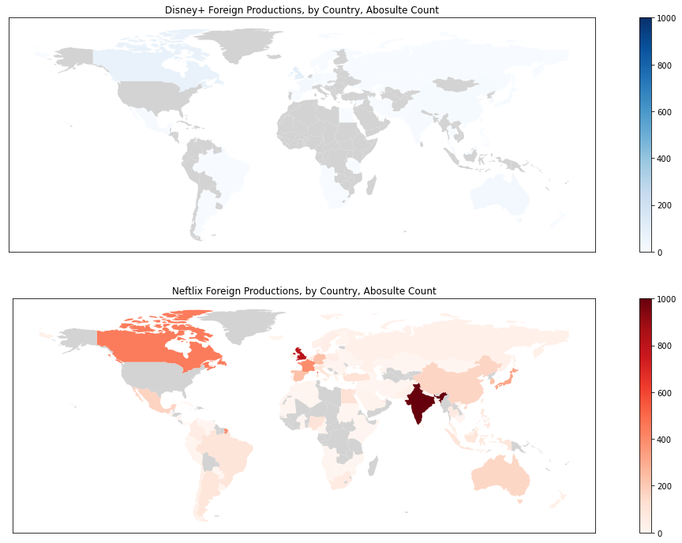

Introduction and Motivation
The last several years have brought substantial changes to the ways in which movies and TV shows are delivered. Streaming services have had a significant impact on content distribution. Many big name producers and traditional distributors have been launching their own services in order to more directly deliver content to users (and collect valuable data in the process, presumably).
The biggest of these more recent entrants to the streaming market is Disney, whose Disney+ service launched in the U.S. and a few other select countries in late 2019. The growth has been impressive. Disney+ has already surpassed 100 million subscribers and is on track to pass Netflix by late 2023 at current rates.
However, there are many unknowns at play here. Can Disney+ sustain such strong growth? Can Netflix fend off the challenge from Disney+ and other newly launched streaming services? One way to get insight into these questions might be to look at the content on offer from each service.
The Data
Streaming services are protective of information like their subscriber count, but some data can be found here and there (often from quarterly reports). The data used for Netflix’s subscriber count can be found here, and for Disney+ here.
The data on titles is from two Kaggle Datasets (Netflix: here; Disney+: here). It is generally not assumed this data is 100% correct, but it is plausible enough to give a good idea of the titles available on each service.
General Inventory Comparison
As a starting point, we may look at how much content a monthly subscription gives us access to. However, there is an important caveat here; a naive approach with the Netflix dataset is likely to be misleading. That is, content regularly disappears from Netflix, and it’s not clear that this fact is tracked on this dataset. It is thus likely a straight-line sum is not actually reflective of available content; other estimates have Netflix libraries generally containing about 4100-5800 titles in 2021 (depending on the country) .
It is likely fair to say, however, that there is both more content on Netflix and more content being added. While Netflix did seem to be winding down new acquisitions and productions after about 2019, they have since picked up the pace again, possibly in light of increasing competition. Disney has plenty of room to increase their additions, though that may compromise quality and be its own challenge.
Ratings and Target Audiences
One way to determine the audience a service caters to is by using ratings as a rough proxy. We can examine the distribution of ratings given to each service's respective inventory to get an understanding of the target audiences.
Disney+ does not have any content rated above TV-14. While this doesn’t necessarily mean all their content is “kid-only” or even “kid-oriented” (e.g., The Mandalorian is a slow-burn space western rated TV-14 whose primary audience, I would wager, is not children), it does exclude certain kinds of stories that might appeal to adults (e.g., those featuring sex or drugs).
Netflix, on the other hand, has a more balanced set of ratings, though it tends to lean towards more adult-oriented; TV-MA is the most common rating. This suggests that the two services appeal to different audiences, or possbily to memebrs of the same audience finding themselves in different moods; from a ratings perspective, they don't seem to be in direct competition.
Mapping out International Content
One final area we will address here is international content. In October 2021, Netflix saw its investments in international content pay off huge with Squid Game, a South Korean series that became popular enough to inspire an Economist article . A look at the map belows reveals that Netflix has made investments in productions and acquisitions in many different countries, and Disney+ has hardly begun to source content globally.
Netflix seems to be making a big bet on Indian content, most likely in hopes that they can win over the emerging internet-enabled Indian market in a similar manner to their success in South Korea and Japan. For Disney+, the biggest source of non-North American content has been the U.K.
While it’s clear Disney+ has yet to roll out localized content strategies in the same way Netflix has, one might question whether they ultimately need to. Disney’s mainline movie franchises and studios (the Marvel Cinematic Universe, Star Wars, Pixar) continue to be extremely popular internationally. It’s unclear at this point whether Disney will need the same kind of localized content to succeed internationally; there is reason to believe they can manage on the strength of their established IP alone.
Conclusions
One conclusion to draw from this is that the framing of Netflix v. Disney is conceptually flawed, as a zero-sum competition. Recent studies have shown that about half of U.S. consumers subscribe to at least four streaming services . Netflix has a wider-variety of adult-oriented content, and has done a better job of poistioning itself as a place for local content as well (which can often has cross-clutural appeal as well). Disney+, on the other hand, has stuck to producing largely "safe" or family-oriented U.S.-centric (English-language) content, and there isn't any reason to believe its collection of IP will be less popular when piped through internet lines. There is a plausible space for both of these services to meet different demands with the same consumers; it is plausible to believe that both Netflix and Disney+ can co-exist.
Where they are more likely to compete with each other is not for consumers directly but for on- and off-camera talent. The Marvel Cinematic Universe continues to grow and lock-up actors in Hollywood (so much so that they've begun recycling, while Netflix has thrown around money to retain directors and content-makers. The real streaming wars are likely to be conducted off-camera.